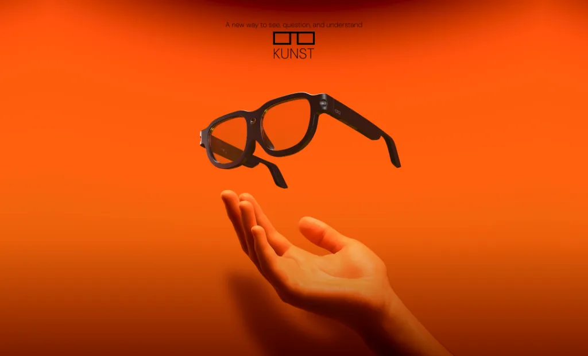
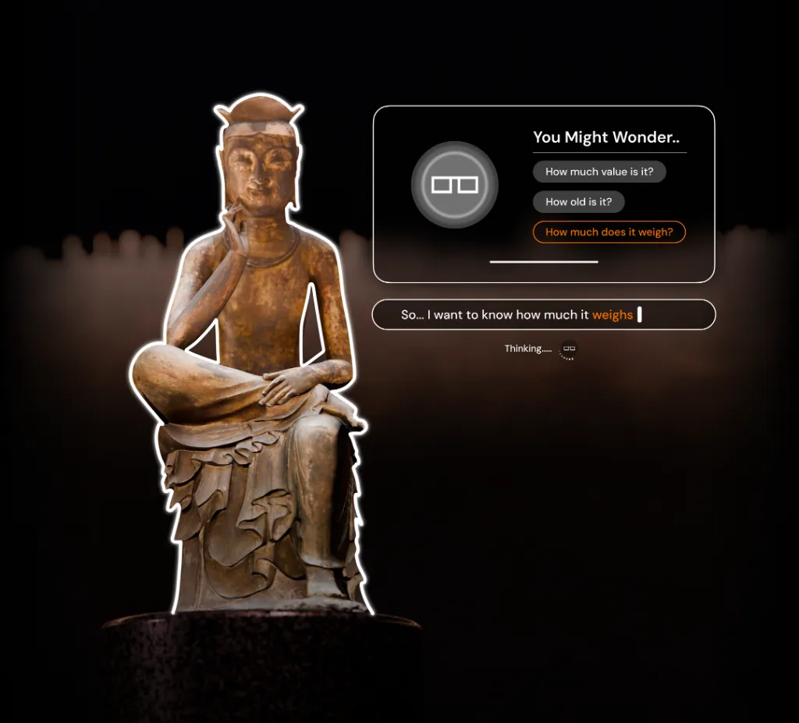
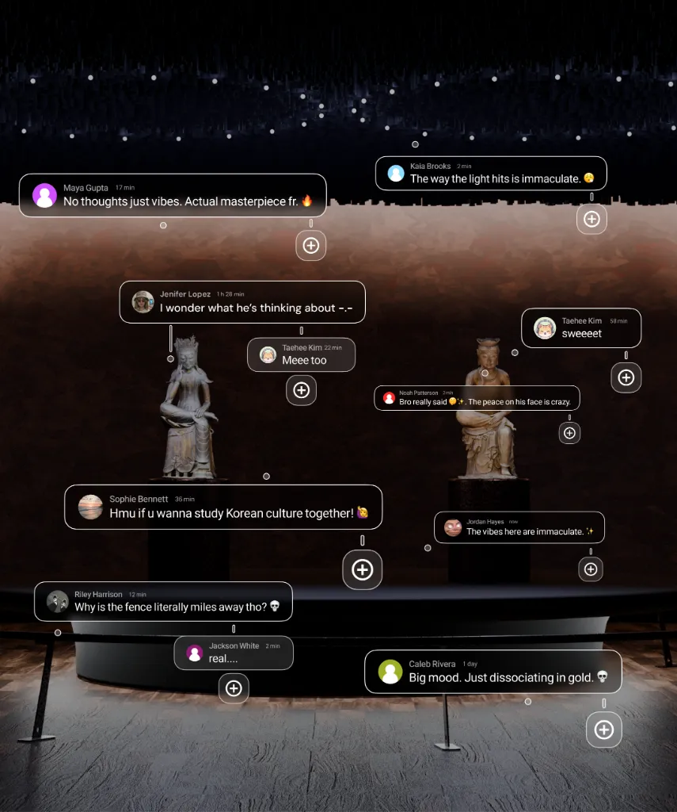

Current docent devices deliver information in a one-way format, leaving no space for interaction or questions. Visitors who encounter new curiosities or doubts during the exhibition have no immediate way to engage with them.
Inability to Ask Questions
Inconvenient Usability

KUNST aims to create an Experience
where visitors Actively Explore & Interpret
with their own perspectives and questions.
Curiosity shouldn't wait. Unlike static audio guides, KUNST’s conversational AI answers your specific questions in real-time. No need to save it for a later search—just ask the moment you wonder.


Leave your mark in the air. Share your insights like stickers with fellow visitors. By visualizing thoughts, KUNST turns the exhibition space into a lively community where everyone exchanges perspectives and enjoys art together.